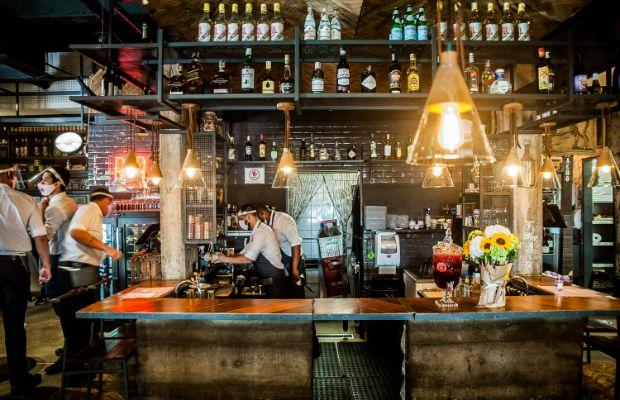
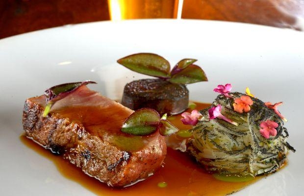

A Casa do Porco São Paulo
La perfección absoluta de la carne de cerdo se encuentra con la filantropía


La perfección absoluta de la carne de cerdo se encuentra con la filantropía
¿Cuál es el concepto? La idea del cielo de un carnívoro, A Casa do Porco es la visión de los chefs Jefferson Rueda y Janaína Torres Rueda, que muestra carne de cerdo, fuego y todo lo relacionado con la carnicería. Significa "Casa del Cerdo" en portugués y es una verdadera peregrinación porcina. Además, A Casa do Porco recibe por segundo año consecutivo el título de Mejor Restaurante de Brasil, donde también toda la carne proviene con orgullo.
En el menú: La amplia carta se divide en menú a la carta y menú degustación ‘Somos de Carne e Osso’, que explora toda la amplitud de la gastronomía brasileña. Disfrute de los tradicionales embutidos artesanales, las croquetas de yuca y el cerdo asado a fuego lento, delicadamente cocinado durante seis a nueve horas a fuego abierto. Para equilibrar el espectáculo umami, también hay opciones de ensaladas, platos con huevo, pasta y arroz.
Bebidas para maridar: Ven por la gastronomía, quédate por los cócteles. La selección de bebidas es casi tan amplia como el menú de comida. Además de los clásicos, como Bloody Mary, Manhattan y las icónicas Caipirinhas brasileñas, los comensales pueden optar por un tereré (una popular infusión de té amargo) o elegir entre una variedad de cachaças, bitters y whiskies.
Acerca de los chefs: Jefferson Rueda comenzó su carrera culinaria como carnicero antes de formarse en la sucursal brasileña del Culinary Institute of America. Conocido por su paso por el restaurante de clase mundial El Celler de Can Roca y el favorito latinoamericano Attimo, se le unió su ex socia, Janaína, para abrir A Casa do Porco. Recibió el Premio Icono 2020 y es la ganadora de este año del Premio a la Mejor Chef Femenina de América Latina gracias a sus continuos esfuerzos por unir a la comunidad gastronómica del país y alimentar a los vulnerables. La pareja todavía dirige el restaurante junta como socios profesionales.
Av. São Luiz 140, 4º andar, República, São Paulo, Brazil
+55 11 3258 2578
Visit A Casa do Porco on Facebook
Visit A Casa do Porco on Instagram